Edges and lines# 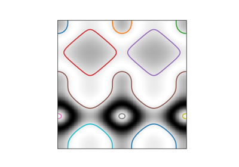 Contour finding Contour finding Convex Hull Convex Hull 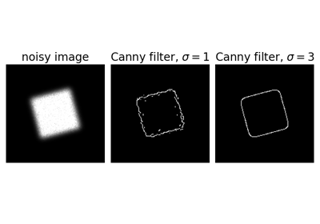 Canny edge detector Canny edge detector 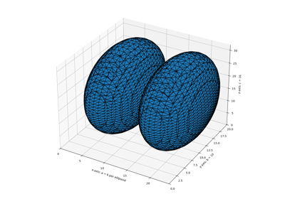 Marching Cubes Marching Cubes 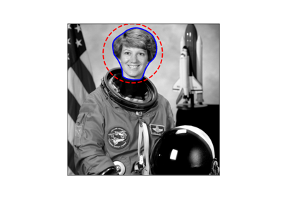 Active Contour Model Active Contour Model 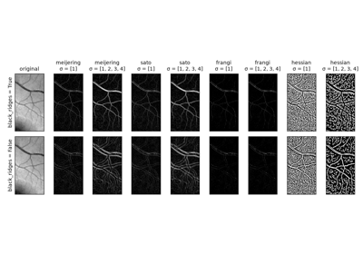 Ridge operators Ridge operators 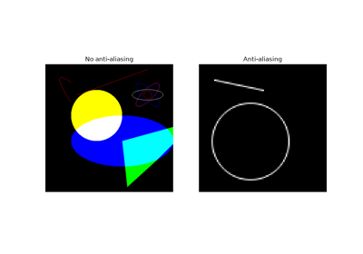 Shapes Shapes 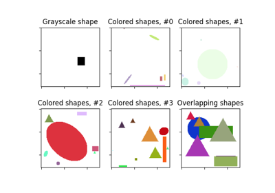 Random Shapes Random Shapes 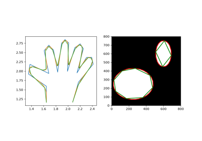 Approximate and subdivide polygons Approximate and subdivide polygons 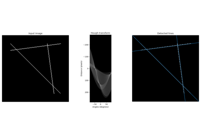 Straight line Hough transform Straight line Hough transform Circular and Elliptical Hough Transforms Circular and Elliptical Hough Transforms 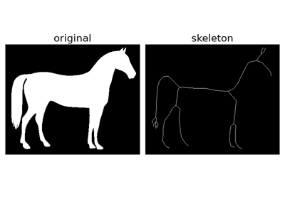 Skeletonize Skeletonize 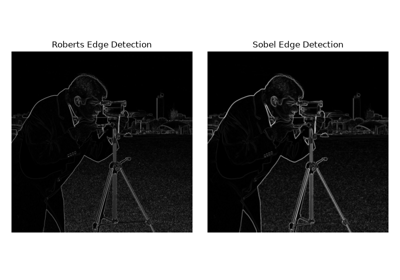 Edge operators Edge operators